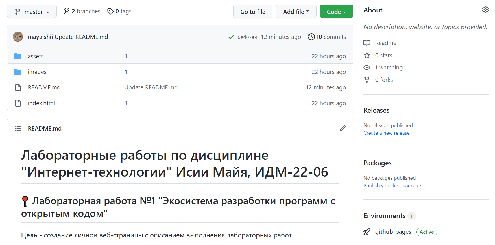

Майя Исии
МГТУ Станкин, группа ИДМ-22-06
МГТУ Станкин, группа ИДМ-22-06
Цель работы - создание onepage-отчета по лабораторным работам на GitHub и работа с Git.

Задачи работы:В рамках достижения данной цели были выполнены следующие шаги: Была сформирована команда в составе восьми человек и распределены роли в проекте:
Цель работы - настройка коммутаторов и маршрутизаторов для осуществления работоспособности локальной сети